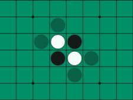

About Me
I am a Computer Engineering student focusing on software and computer hardware
at the University of Toronto.
I am experienced in C/C++, Verilog and Python. I strive to add more skills to my toolbox, and expand my current capabilities.
Projects that challenge and excite me are something I look out for.
In my spare time, I enjoy working on my projects, technical and non-technical. I'm very passionate about music, and
play the guitar. I'm also an avid football fan.

Geographic Information System built in C++ that provides navigational data, made in a team
of three for my Software Design Course.
This program provides functionality including path finding and information on
points of interest. Data was obtained from
APIs
that use Open Street Map
data. We also added further functionality to these APIs. The GUI was developed using Gtk and pathfinding was
implemented using the A* algorithm.
Back end was added for multiple destination path finding that could allow functionality to
extend to a trip planner.

Minesweeper program built in C recreating the classic video game,
made in a team of two for my Computer Organisation Course project.
This program was meant to be run off a DE1-SoC board using memory mapped IO
for a VGA monitor, pushbuttons and a PS2 keyboard. Due to COVID-19 testing was
done on cpulator (see more
here). Check out the
Github!

Music player and recorder built in Python as a passion project. This
program allows audio playback in .mp3 and .wav formats,
with standard playback control features. Recordings are produced in .wav format. Currently,
album art is displayed but going forward, I plan to add
song visualisation. Python libraries used include tkinter, pygame and pyaudio. Check out the
Github!

Othello algorithm built in C for my Computer Fundamentals course. I made this algorithm with
the goal of
translating my real life
playing style into code. When played against all other alogrithms in my first year class,
my algorithm ranked 10th.
Intelligent Sensory Microsystems Lab
May 2020 - Present
I am currently working as a summer research student at the ISML Lab in U of T,
in the image sensor group. My primary role has been
in debugging Verilog code through simulations in Xilinx Vivado/ISE as well as
testing the camera itself. I have also
worked on adapting
firmware between different versions of image sensors, and producing documentation.
Chestnut Residence and Conference Center
September 2019 - May 2020
During the last school year, I was involved at my university residence as a
Floor Social Coordinator. My role involved
organising events for the students on my floor as
well as larger building wide events on a commission with other Social Coordinators.
Events I organised included a Halloween haunted house, an escape room, board game nights and self-care nights.
Institue of Palliative Medicine
Jun 2019 - Aug 2019
I worked at the Institute of Palliative Medicine in Calicut, India as a research assistant.
My role was to collect data for a
mixed method
study to evalulate the efficacy of bereavement care provided by the Institute.
I interviewed families of patients who had passed away and
translated the interviews
from Malayalam to English, and generated transcripts.